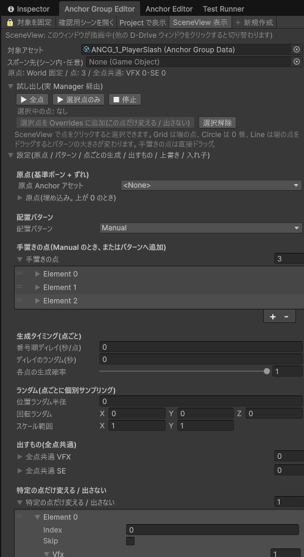
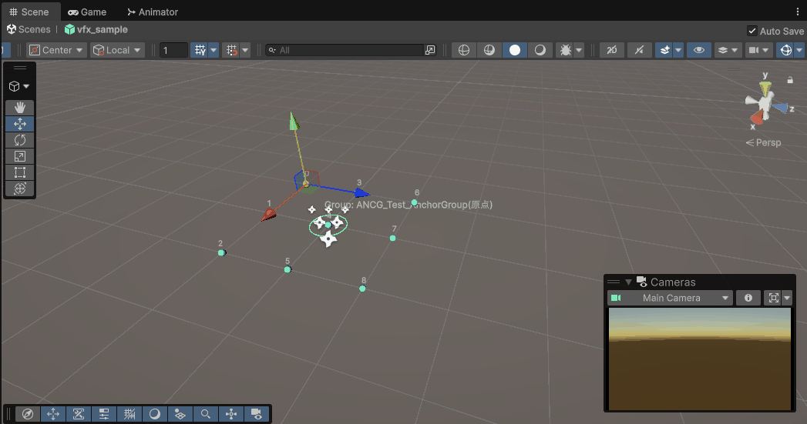

最終更新日: 2026-09-19
配置セット（Anchor Group）は、「この形に並べた場所に、このエフェクト / 効果音を出す」をひとまとめにしたデータです。3×3 の格子、円形、一列、ランダムなどのパターンを選んで数を入れるだけで点が並び、1 か所ずつ作る必要はありません。
Tools > D-Drive > Editors > Anchor Group（Anchor Group Editor）。Project で配置セットを選ぶと自動で入りますHealField）
| 要素 | 説明 |
|---|---|
| スポーン先 | 原点の基準（ボーン名など）を探す起点。キャラクターや AnchorRig を入れる。原点が World 固定なら不要 |
| 状態表示 | 「原点: ✓ '…'」「点: 9」「全点共通: VFX 1・SE 0」など。「⚠」なら原点の設定を見直す |
| ▶ 全点 / ▶ 選択点のみ / ■ 停止 | 試し出し。「選択点のみ」は SceneView でクリックした 1 点だけ出す |
| 選択中の点 | クリックした点の番号と種類（Grid / 手置き など）。「選択点を Overrides に追加」で、その点だけ別のものにする / 出さない設定の行ができます |
| SceneView | 大きい円 = 原点。小さい球 = 各点（番号付き）。色: 通常 = 水色、上書きあり = 橙、出さない = 灰色に ×、選択中 = 黄。クリックで選択、ドラッグで編集。「SceneView 表示」を OFF にすると描きません。他の D-Drive ウィンドウと同時に開いているときは、最後にクリックしたウィンドウだけがハンドルを出します |
| 検証 | 点が 0、原点の Path 未設定、出すものが未登録、入れ子の循環などを表示 |

| 項目 | 説明 |
|---|---|
| 原点 Anchor アセット / 原点(埋め込み) | 並びの中心をどこに置くか。Anchor アセットを選ぶとそれが原点（ランダムやディレイも引き継ぐ）。選ばなければ埋め込みの Space / Path / オフセットで決める |
| 配置パターン | Grid: 格子（X・Y・Z の個数と間隔、中央寄せ）。Circle: 円周（個数・半径・開始角・扇の角度・外向き）。Line: 一列（個数・長さ・方向・中央寄せ）。Random: 球の中にランダム（個数・半径・シード。シード 0 なら毎回違う配置）。Manual: 手置きの点だけ |
| 手置きの点 | パターンに追加する点、または Manual のときの点。SceneView でドラッグして動かせます |
| 番号順ディレイ(秒/点) / ディレイのランダム | 点の番号 × 秒だけ遅らせる。0.05 なら 8 番は 0.4 秒後。波紋・順番点灯に |
| 各点の生成確率 | 0.7 なら各点が 7 割の確率で出る（ランダムに欠ける） |
| 位置ランダム半径 / 回転ランダム / スケール範囲 | 各点に個別にかかるばらつき |
| 全点共通 VFX / SE | すべての点に出すもの。複数入れると全部出ます |
| 特定の点だけ変える / 出さない（Overrides） | Index = 点の番号。「Skip」ON でその点は出さない。Vfx / Se に入れるとその点だけ差し替え（空なら共通のまま） |
| 入れ子（Children） | 各点（At Index = -1 で全点、番号で 1 点）に別の配置セットを出す。子の原点は無視され、その点が中心になります |
| やりたいこと | 設定 |
|---|---|
| 回復エリアの床に格子状に光を出す | Grid 3×3、間隔 1、共通 VFX に光。番号順ディレイ 0.05 で波紋のように |
| ボスの周りを 8 本の炎で囲む | スポーン先にボス、原点は Space=ContextTarget。Circle 8、半径 2、外向き ON |
| 中央だけ大きい柱、周りは小さい火花 | Grid 3×3、共通 VFX に火花。中央（4 番）をクリック →「Overrides に追加」→ Vfx に柱を入れる |
| 四隅は出さない | 0・2・6・8 番を Overrides に追加して Skip ON |
| 爆発の周囲にランダムに火花を散らす | Random 12、半径 1.5、各点の生成確率 0.7、位置ランダム半径 0.2 |
| 格子の各点に小さな円形の粒 | 円形の配置セットを別に作り、格子側の「入れ子」に At Index = -1 で登録 |
Presentationのトラック種別「AnchorGroup」に配置セットの ID を入れると、剣攻撃などの一連の演出（アニメ・SE・カメラ揺れ…）の中の 1 トラックとして配置セットを一緒に再生できます。Presentation Editor の SceneView では配置セットの全点が番号付きで表示されますが、点の位置を動かす編集はできません。並びや点を変えたいときは、このページの Anchor Group Editor を開いて調整してください。